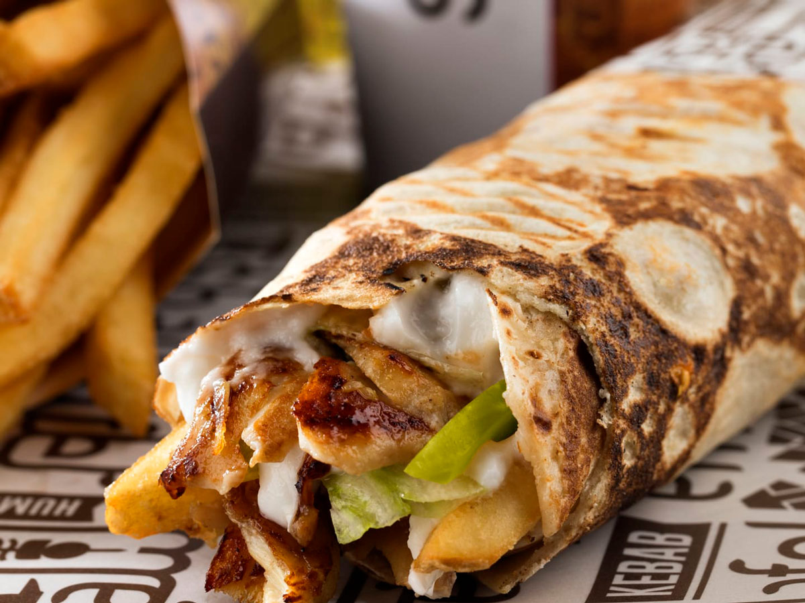

Home
shawrama recipe

Description
Shawarma is a popular dish originating from the Middle East.
It’s a popular street food that is traditionally made in the form of
spiced meats that are stacked on a vertical rotisserie with thin slices shaved off as it rotates. But don’t worry! We can cook our horizontally in a good old pan or on the BBQ! , shawrama is the greatest food in the entire univers in my opnian
Ingredients
- Chicken
- spices
- yougrt
- lemon juice
- garlic
the recipe
- step 1
To make the marinade: Combine malt vinegar, 1/4 cup yogurt, vegetable oil, mixed spice, cardamom,
salt, and pepper together in a glass baking dish. Add chicken thighs to the mixture and turn to coat.
Cover and marinate in the refrigerator for at least 4 hours or overnight.
- step 2
Preheat the oven to 350 degrees F (175 degrees C)
- step 3
To make the tahini sauce: Combine tahini, 1/4 cup yogurt, garlic, lemon juice, olive oil, and parsley together in a small bowl. Season with salt and pepper, taste, and adjust flavors if desired. Cover and refrigerate.